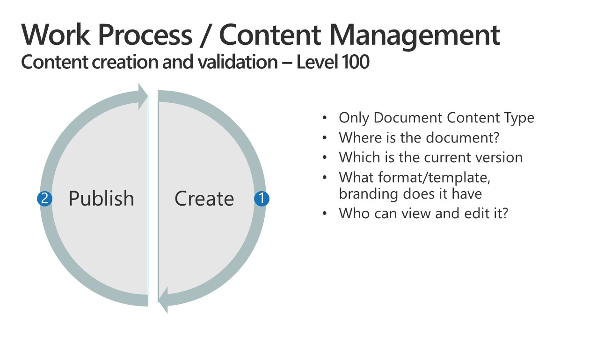

Maturity Model for Microsoft 365 - Management of Content Competency
Note
This is an open-source article with the community providing support for it. For official Microsoft content, see Microsoft 365 documentation.

Overview of the Concepts [tl;dr]
Content and its management are a large topic area, with many decades of technology and expertise leading us to this point. This competency extends beyond the common storage and structure debate; we have tried to encompass commonly overlooked areas including internal layout and presentation standards within document types, different classes of content beyond Microsoft Office suite file types, classification and labelling, as well as extended life cycle management to include retention and disposal. It should be remembered that content includes information not stored as discrete files, so also covers, for example, items in lists, web pages in a content management system; it could encompass emails and conversations, tasks, contacts and many other types of information in a variety of systems, all of which need to be created, retrieved, used effectively and ultimately removed in a way that supports the wider business context.
Definition of this competency
Content covers a wide variety of different types of digital items, including files, snippets of information, emails, media content such as audio and video, chats and conversations, and many other things. Often these are discrete files such as Office documents, but equally they can be web pages, list items, or content records in a database. A key characteristic of these many types of content is that they have a life cycle which includes their creation, use, and ultimately their disposal: they typically require storing somewhere, need to be described in some way, presented in such a way that people can find and use them when required and made available in a format suitable for their intended use which may include being machine readable and interpretable by people.
This competency focuses on many aspects of the management of content, including presentation, life cycle, identification and classification and storage. For the sake of clarity and relative brevity, it does not cover management of 'content containers' such as SharePoint libraries and sites, Teams channels, Planner plans, etc.
Business Value & Related Competencies (Why)
Managing an organization’s content and its lifecycle is a crucial success factor for the following business competencies:
- Governance, Risks, and Compliance (GRC): The requirements for content and content lifecycle management may stem directly from GRC objectives and activities (e.g., GDPR, SOX). Conversely, failure to manage content can introduce risks or hinder the success of GRC activities.
- Information Security: Information security addresses information Availability, Integrity, and Confidentiality. It therefore relates to content management in terms of findability (A), content quality (I), and content tagging and identification ©.
- Cognitive Business: The advent of generative AI has led to increased usage of unstructured data, such as data contained in documents, emails, conversations, web pages, and so on. Managing the quality and lifecycle of an organization’s content is becoming a key success factor for efficient AI adoption.
- Business Process and Quality Management: Content management should prevent any out-of-date information from being used inappropriately, while ensuring that important and job-related information is timely and easily accessible. This ensures that business processes are carried out correctly. Additionally, the business process is typically the starting point for defining content management requirements.
Types of content
Types of content cover but are not limited to the following:
- Documents - any files we can store in Microsoft 365
- Web pages & News
- Conversations
- Items (e.g. snippets of information, FAQs, tasks, contacts, notifications, list items)
- Media
Aspects of content that can be managed
Presentation
- Consistency
- Standards
- Views, marking, formatting, //RAGRed, amber, blue status //, iconography
- Headings and styles
- Readability and cognitive load
- Accessibility
Lifecycle Management
- Creation
- Co-authoring
- Templates
- Content structure and sematic design
- Release/Approval/Scheduling
- Management
- Versioning
- eDiscovery
- Protection of content
- Information Rights Management (IRM), //DLPData Loss Prevention (DLP)//, Permissions, security
- Versioning and version history
- Retention and Disposal
- Archive
- Backup
- Destruction
"Cradle to grave"
Identification
- Tagging
- Sensitivity Labelling
- Retention Labelling
- Protection Labelling
- Metadata
Storage
- Structure
- Platforms and tools
- Information Architecture
- "Putability"
- Duplicate management
- Costs
- Offline and sync
Evolution of this competency
Level 100 - Initial
The entry point for most organizations. There are no standards defined for how content is identified, presented or structured. The content is either stored all over the place or in one big bucket which makes it difficult for people to find. There is a lot of frustration at this level because people spend a lot of time finding content that they know is there. Initial level characteristics include:
100 Lifecycle Management
- Content is created and stored inconsistently in a variety of applications, in many styles. Often the content format is not appropriate, for example, notifications are created as documents attached to an email, contacts are stored in Excel, images are stored in slide decks.
- No process for lifecycle management is in place.
- ✨ Documents are created on an ad hoc basis either from a blank copy or by re-using a previous version (without clearing previous metadata).
- File formats for newly created content are not standardized and out of date or unexpected formats are in use.
- Content creation tools are not standardized, may use older versions of software, or tools from different companies, creating further content inconsistencies.
- Templates may exist, but they are "lost" in the folder hierarchy and infrequently used; templates are not integrated into the into the 'New Document' settings in Office applications
- Editing, updates and reviews are largely serial activities or conducted in parallel via email which results in multiple versions which must be manually reassembled.
- Version control is absent, achieved through unmanaged file names or implemented via a separate list or database. Access to version history is absent or unreliable.
- Content governance and protection are absent or achieved manually.
- Disposal of superseded content is largely ad hoc. Removal policies are absent, secure destruction is not understood and a large proportion of retained content is out of date, duplicated or incomplete.
- Users are uncertain of how and where to create list items, typically creating them as documents.
- Lists do not contain granular items. They are mostly embedded in a master document.
- Options for sorting, filtering and grouping items are limited or absent.

100 Identification
- Naming conventions are arbitrary and unmanaged
- Version control is achieved via file names and or document location.
- Tagging and metadata is not in general use; metadata that has been applied is inconsistent, frequently incorrect and may apply to a previous document that has been used as a de facto template.
100 Presentation
- ✨ Templates are not managed and deployed across the organization to ensure standards. Templates that do exist are not managed, updated, tested for effectiveness nor do they include appropriate settings such as language, default fonts.
- Consistent styling and branding are not used consistently. Formatting is left to the end user, without guidance. Staff make their own decisions on logos and images to include.
- A large proportion of content fails to meet accessibility guidelines.
- Users are not well trained in use of content creation tools, not is there a process for review and quality improvement.
- Regional settings have not been implemented. Documents are in variants on core languages and custom dictionaries are not used.
- Headings and styles are unmanaged and no guidance on what to use is in place.
- List items are frequently stored as files in spreadsheets, in word processor documents or as simple text files. Formatting is arbitrary; presentation and readability are left to the individual.
- There is little or no guidance on email signatures footers; some staff use the tools in their email client to add these, but most are unaware of the value or mechanism of doing this.
100 Storage
Users are uncertain where to save documents; frequently creating multiple copies in different places.
No strong file management strategy is in place. While a file server may be in use, users may store content on a local hard drive or a removable drive.
Folder/directory structures are arbitrary.
Access permissions to content may exist but are not managed or documented.
100 Impacts
At this level you can expect the following:
- ✨ Users must guess where content is stored and where to store their content, consuming significant amounts of time.
- Search is seen as a primary navigational tool, and is generally considered to be ineffective
- Cognitive load is high due to inconsistencies in document layouts and styles; staff find it hard to scan, understand and assimilate information.
- ✨ Content is lost and misplaced.
- Multiple copies of content with slight differences exist and there is no central source of truth.
- Applications that use the content have usability issues and mistakes are easily made.
- Poor decisions are made due to incomplete or out of date information.
- Productivity is poor as staff recreate content that already exists. Timescales are often missed, and quality is often low and inconsistent, leading to poor outcomes.
- Staff are unnecessarily busy, stressed and frustrated.
Level 200 - Managed
Managed level characteristics include:
200 Lifecycle Management
- While there is some expectation that content is created and stored consistently in appropriate applications, a lack of staff awareness and monitoring results in inappropriate content approaches. Notifications as attached documents, contacts are in personal lists, etc., remain widespread. Managers do not set observable standards or expectations and inadvertently undermine improvement attempts.
- There is an understanding of lifecycle management and some process for this is outlined but the processes are not embedded in the organization other than in a few key areas.
- Document lifecycle tracking is largely managed through external lists and document registers. Documents are generally created from a blank copy or by re-using a previous version. Staff remain free to deviate from the processes and there is little enforcement by the system or management.
- Lifecycle management of list items is largely absent.
- Content creation tools and file formats have been standardized across the organization, but this is not enforced, and some staff continue to use non-compliant formats. There is no systematic standardization of legacy content. There may be overzealous application of the standards in some areas, overlooking the specific business need in the local pursuit of standardization.
- ✨ Templates exist, but are not well managed and not published in a way that promotes their active use across the organization; templates are not integrated into the 'New Document settings
- Some teams and staff understand the power of multi-author editing by storing their content in an online content management platform. While they use and promote this approach, many staff still expect to receive attachments rather than live links, resulting in serial editing in many cases. Content management approaches are rarely mandated outside critical documents.
- Version control is in use in these cases though much remains unmanaged or handled through manual update of document registers. Staff members are often unaware of how to use version history and version control.
- ✨ Files within the content management platforms have some level of role-based access, governance and protection, though this is not mandated, well documented, centrally managed or built to best practice.
- Disposal of superseded content remains ad hoc, though there may be a periodic clean up and bulk review, especially for managed content. This is true of documents, web pages, items and most other forms of content. There is limited appreciation of the need to declutter, deduplicate, decommission and delete.
- There are no standards or expectations for how emails should be managed; staff frequently have thousands of emails in their Inbox, many unread. Flagging, storage in email folders or offloading of content and actions to other systems is not well understood and adopted.
- List items tend to be created in spreadsheets, allowing a limited degree of item level management and versioning. Some users understand how to sort and filter. Headings, field types and structure remain inconsistent. Default names are used rather using a naming convention
- List items are not connected, centralized, or created for reuse.

200 Identification
Tagging and use of metadata is sporadic, via file metadata or within the content management system; though a document register often services this purpose. There are some efforts to standardize some terms and categories, though this is not applied uniformly across the organization. Status (e.g. Not Started, In Progress, Ready for Review, Complete), is in place for routine processes, however there is no consistency across the organization and the status is often out of date.
Naming conventions are in place for many classes of content, though this is not enforced and there are large amounts of content where naming approaches are opaque to other users.
Documents frequently lack clear sections with structured headings. Subject lines in emails are often unclear and not updated as a conversation evolves. Contacts are labelled arbitrarily or inconsistently.
The same names are used for different things and vice .versa. The organization lacks a maintained glossary and agreed set of terms.
200 Presentation
- ✨ Templates are created for many types of content and are made available to staff. They are often updated. Users generally know where to find them, but default to using previously published documents. Some staff have added templates to their default location to make it easier to access, especially for frequent processes; however, this is not embedded across the organization. Some effort has been put into creating well-formed templates and many have been tested for standardized style, language and other settings. These have reasonably consistent styling and branding.
- Many users understand the importance of using Headings headings and other styles in content, however poor, ad hoc formatting remains commonplace.
- A large proportion of content fails to meet accessibility guidelines.
- Some users are trained, however most are expected to learn on the job, line management are thought to manage this process to drive improvements, however it is likely that most managers also lack the understanding and skills.
- Regionalization is imperfect and users are often unaware of how to address this. Custom dictionaries are generally not used.
- There are often standard libraries of images, logos and iconography for use, this is generally at a department level.
- List items generally are not well formatted to improve the presentation of the content or to automatically highlight important items or elements.
- There is guidance on emails footers signatures and staff are asked to manually update these when changes are needed.
200 Storage
✨ Users remain uncertain where to save documents and content; frequently creating multiple copies in different places. No deduplication process exists.
Multiple file management strategies exist, often with overlap. File server storage is the predominant approach, with local storage on hard drives or removable devices discouraged or disallowed.
There is often an attempt to create structure within the storage solution, especially at department or project levels; however, the limitations of hierarchical approaches are poorly understood and largely unaddressed. Folder/directory structures are inconsistent across different parts of the organization and rely on "local" knowledge to navigate. Where content management platforms are used, storage strategy replicates directory structures.
Access permissions are applied at the directory or "drive" level and some attempt is made to manage these; however, the lack of a robust process results in inconsistencies and out-of-date permissions.
200 Impacts
At this level you can expect the following:
- Applications that use the content have usability issues and mistakes are easily made
- Users understand where content should be stored, but find that there are many exceptions, conflicts and inconsistencies; this consumes significant amounts of time and creates uncertainty and degrades compliance with the recommendations.
- Content is lost and misplaced.
- While there are improvements in key areas, overall cognitive load remains high due to inconsistencies in document layouts and styles; staff find it hard to scan, understand and assimilate information.
- Multiple copies of content with slight differences exist and there is no central source of truth.
- Applications that use the content have usability issues and mistakes are easily made.
- Poor decisions are made due to incomplete or out of date information.
- Productivity is poor as staff recreate content that already exists. Timescales are often missed, and quality is often low and inconsistent, leading to poor outcomes.
- Staff are unnecessarily busy, stressed and frustrated.
- Staff are focused on tasks which are of low priority to the business which have low impact and so feel that they are not making a different
- Multiple attempts are made to introduce improvements, however adoption remains poor and managers are unnecessarily busy, stressed and frustrated by the lack of progress.
Level 300 - Defined
Defined level characteristics include:
300 Lifecycle Management
- ✨ Basic Content Lifecycle Management is in place for key business operations, commonly via content management systems (CMS) rather than file servers; this ensures that draft, active/published and superseded content items are easily identified. Document registers are discouraged in favor of tools with the CMS, though legacy registers may persist. There is some effort to ensure important content is retained and there are occasional efforts to cleanse old documents; this may result in loss of important information due to absence of robust controls. Staff can deviate from many processes, though this is actively discouraged.
- Content creation tools and file formats have been standardized across the organization, policies and management processes actively discourage use of non-compliant formats. Some effort is made to update legacy content where it is in current use.
- Templates are lifecycle- managed and processes make it easy to create new content from these.
- Use of CMS storage widely enables multi-author editing and staff are generally aware of this approach, though some (passive and active) resistance remains. Use of email attachments is in decline,decline; many staff actively discourage this and remind others about the storage and sharing policy.
- ✨ Version control is in general use and version-duplicates are largely absent (though other sources of duplicates do occur)
- Role-based access, governance and protection is in use; comprehensive implementation has not yet been achieved.
- ✨ Important content has processes for lifecycle tracking, with periodic clean up and disposal. Retention mechanisms are attempted, sporadically. Many documents lack appropriate protection or governance, despite an understanding of the need for compliance and other controls.
- There is guidance on effective use of email and recommendations on how to store email. Some email activity has migrated to real time conversations, there is limited recognition that this represents another type of content to manage.
- Items previously stored in freeform documents or in Excel are beginning to be managed in dedicated List applications. This allows granular management of each item, with item level security, version history etc.
- The use of List applications enables content reuse, with list items able to act as data sources. Column/field headings show some evidence of standardization as a result. Column/Field types are generally appropriate; some consistency and standards are emerging.

300 Identification
- There are standard content categories, and these are frequently used to group and tag content, aiding in search and productivity. A standard set of consistent content statuses have been developed (e.g. Not Started, In Progress, Ready for Review, Complete), however there is no consistency across the organization.
- Naming conventions are in place for many classes of content, including items, files, media and these are often enforced using technical or process measures.
- Some areas are experimenting with "content classes" that describe organization-wide documents and items, however this is not widely adopted nor comprehensively designed.
300 Presentation
- Routine processes have well defined and maintained templates which are accessible from withing the process and are mandated and adopted for those processes. Templates are generally "on-brand", fit for purpose, and have been reviewed for quality. These have reasonably consistent styling and branding. Re-use of previous documents is avoided, though prior content is often copied into the new documents. Some staff have added general templates to their default location to make it easier to access and there may be efforts to implement this across the organization.
- Emails have automated signature blocks.
- Templates and many ad hoc documents are developed using Headings headings and other presentation and layout formats; some effort has been put into creating company-wide document styles. Content tends to meet basic accessibility guidelines by default. There are some management processes to drive adoption of this practice and to drive improvements.
- ✨ Basic content skills are provided through training or self-learning as well as through on the job mentoring and feedback.
- Regionalization is actively addressed through templates, configuration and policy; however, gaps remain and are often allowed to persist.
- Custom dictionaries use is in place in some parts of the organization, though there is limited understanding of how to maintain and cleanse these dictionaries, leading to degradation over time.
- Standard media and content libraries are commonly used, through maintenance is variable and managed at a department level.
- Lists of items generally are presented using out of the box formatting and layouts. Automatic formatting and standardized layouts, column ordering etc. is not well developed.
- Some use of views to sort, filter and group items is in use is emerging, but users frequently overlook these tools. Standards for views and view naming conventions have not been established
300 Storage
- There is a designed storage approach, with signposting, guidance, and some enforcement of where to put content. Content management strategies are understood and are increasingly robust, effort is put into maintaining staff understanding and compliance. File server storage is in active decline, is described as part of the contentment strategy and legacy file stores are understood with an intention to migrate/deprecate them where possible. Use of local storage on hard drives or removable devices is mostly disallowed by policy and technical measures; staff are familiar with the mandated approaches.
- Centralized storage areas are carefully structured, providing access to managed assets, publication and resource areas across the organization, with appropriate permissions. Well-designed information architecture flows down to most departments and projects. Collaboration and personal or team areas remain largely unstructured and somewhat chaotic. Use of folders persists but is in decline in some areas in favor of content tagging and filtered views.
- Access permissions are as granular as needed, applying to entire content repositories and/or to individual items. Management remains somewhat inconsistent in the absence of strong governance processes linked to roles.
- Legacy lists are updated to be stored in appropriate systems, reducing the reliance on direct file storage in favor of task specific applications and platforms.
- The rate of increase in email storage shows signs of reducing.
300 Impacts
At this level you can expect the following:
- Use of content across core business process applications has improved markedly, resulting in fewer mistakes and less wasted time.
- Users understand where content should be stored. Exceptions, conflicts and inconsistencies are greatly reduced, and staff have some confidence, begin to understand the benefits and are more willing to adopt it.
- ✨ Staff find it easier to find, understand and act on existing content. Productivity improves; rework and errors are noticeably in decline.
- Staff recognize central sources of truth and turn to it in preference to other sources.
- Improvements can be introduced and are widely adopted in key processes. Managers are seen as leaders of this adoption and benefit from their staff productivity. Some changes remain ineffective, rushed or only partially effective due to the corrosive effects of legacy content and some staff resistance.
Level 400 - Predictable
Predictable level characteristics include:
400 Lifecycle Management
- ✨ Content Lifecycle Management is in active use in all regulated or quality assured processes and elsewhere that has impacts on the business. Most documents are tagged with sensitivity, status, and retention information or reside in a location where this is enforced.
- All types of content have similar levels of management:
- List items have version control, retention, deletion etc. at the item level.
- Media files are managed in the same way as documents, with metadata, reviews and lifecycles. They are linked to associated assets, such as transcriptions and related media and lifecycle management applies to both the components and the content sets.
- Email items are actively managed and redirected into other types of content or messaging as part of a comprehensive content management approach
- Publication and removal schedules are applied to web pages and news items. Retained web pages are regularly reviewed to ensure they remain up to -to-date and useful/relevant. They are actively linked to related content, with these links dynamically updated as the related content changes, is created or removed.
- Document management capabilities are designed into repositories to be compliant with lifecycle policies. Most content is based on managed content types; these include definitions of the template, identification metadata, lifecycle and disposition markers, status and other policies by default.
- File servers and local file systems are not in general use except where there is a documented need.
- There is active, managed removal of content from managed content areas in accordance with policies and staff are responsible for ongoing "decluttering" and organization of collaboration and personal content. Controls and monitoring are in place and used to review these activities, though typically without automation or strong enforcement.
- ✨ Multi-author content creation and editing is the norm and extends beyond organization boundaries to incorporate suppliers, partners and clients where appropriate and with well understood and monitored security and governance (such as use of time windows for editability). Use of email attachments is the exception within the company and is in decline with external content sharing.
- ✨ Duplication of content is actively avoided and there are periodic checks to identify unnecessary duplicates. There is a good understanding of version control and version history, and these are appropriately used.
- Role-based access, governance and protection is well designed, documented and consistently implemented.
- Document Retention mechanisms are in -lace for all important classes of content and are reviewed annually to ensure policies and technical controls are effective and appropriate. attempted, sporadically. A governance board reviews new needs and oversees decisions on retention, disposition and destruction of content.
- SchemaSchemas exist for common list types, often based on open standards, to ensure consistency and interoperability. Extensions to the schema are carefully considered, reviewed against other schemas in use and rolled out in an integrated way that updates all dependent lists.
- Content classes are developed based on the agreed schema.


400 Identification
- There are standard content categories and these are widely used to group and tag content, aiding in search and productivity. A standard set of consistent content statuses, classifications and other business wide approaches to naming and identifying content are in place. There is some automation of tagging and classification.
- "Content classes" are widely in use and there are processes for creating new classes as needed.
400 Presentation
- There is an active process for updating templates across the organization to ensure they are up to date, fit for purpose and support brand and style guidelines
- Emails have automated footers, with role-based variants and active insertion of content in support of campaigns and other business communication needs.
- ✨ Documents are carefully structured, with consistent use of semantic elements such as headings, default styling, insertable standard content and images. They are designed to support the appropriate and effective presentation of content (i.e. the purpose of the document defines the style of the document) while supporting accessibility guidelines, effective search and other business needs. Staff are well versed in use of these and use them consistently.
- Staff are familiar with best practice across a wide range of content creation. Presentation and management and actively skilled for the needs within their role.
- Regionalization is actively addressed and implemented through templates, configuration and policy. There are processes for identifying errors and inconsistencies and flagging these for action
- Custom and industry dictionaries are deployed to users" computers. There is a process for correcting and updating these.
- Standard media and content libraries are commonly used; there is centralized management of core tags and information architecture used for identification, classification and management.
- Tagging and topics allow systems to recommend content to users.
- Lists employ dynamic formatting, layouts and views to highlight important insights and to aid both item level and aggregated use, comprehension and insights.
- List items are actively used across the content management environment, acting as data sources, lookups and choice field content. Changes are managed and dynamically update other content
400 Storage
- There is a comprehensive storage strategy supported by a well-designed platform for almost all forms of enterprise content. This encompasses "business-personal", collaborative, operational and corporate content as well as the continuum from ad hoc and temporary content to persistent or long-term content. Strong signposting, guidance, and automation aid staff in how to adhere to the strategy and therefore put content in the right "place" n the right way. Content management strategies are well understood and are robust, with staff understanding and compliance monitored. File Server are employed for very specific purposes and not for general content use.
- Centralized storage areas are carefully structured, providing rapid and clear access to managed assets, publication and resource areas across the organization; permissions and security are strongly managed and monitored without limiting productivity. Folder use is rare and appropriate.
- Access permissions are as granular as needed, applying to entire content repositories and/or to individual items and often extend outside the organization to accommodate suppliers, partners and clients with the same level of fidelity and control.
- Email storage growth has plateaued.
400 Impacts
At this level you can expect the following:
- ✨ Content is strongly managed across business applications and processes, feels largely seamless to users and is easy for them to recognize value in and adopt. Staff focus on task completion, contributing to content management consistently, recognizing that their contributions benefit other parts of the system.
- In many cases, content storage is a function of the type of content and not at the discretion of staff; "putability" decisions are driven by well-established principles that staff are fluent at applying.
- Productivity is consistently high and metrics are in place to identify and act on exceptions. Rework and errors are rare.
- Staff intuitively use definitive reference content; they know how to validate that they are using appropriate information and are collectively confident of decisions based on their sources.
- Content driven systems are routinely improved; feedback and monitoring mechanisms at granular and aggregate level continuously identify areas for improvement and enable programs of work to maintain productivity as the business landscape evolves.
- Staff and managers are able to focus on their objectives and are rarely interrupted or frustrated by the quality and accessibility of the content they need or create.
Level 500 - Optimizing
Optimizing level characteristics include:
500 Lifecycle Management
Content Lifecycle Management operates at most levels of the organization, is optimized, tracked and reviewed for effectiveness and actively drives quality, productivity and risk reduction – this may be reflected in certifications, standards and reduced insurance costs. It remains consistent as it spans different types of content and platform.
✨ Most content is created based on well-defined and managed "content classes or content types. There is visibility of use of content types across the organization and an understanding of the content type schema and inheritance.
Linkages between types of content are respected, retaining referential integrity, to ensure that changes at a granular (item, file or document) level do not cause a degradation to sets or collections of content.
✨ Content tagging for classification, access, sensitivity, status and retention is widely automated as are relationships between content.
Retention policies are actively managed and tested. Unmanaged documents are the exception. Document Retention is applied to almost all content, including items in lists, emails other non-file types of content.
Policies and technical controls are actively updated in response to changing needs and regulatory and business landscape.
Default removal policies and notifications drive broad compliance and clutter avoidance. Removal of content is largely automated.
Metrics describe the entire content position across multiple dimensions including status, usage, value and more.
Highly efficient, flexible and productive approaches to the entire content lifecycle are the norm and encompass almost all the organizations actions and interactions.
External organizations are actively assisted in achieving robust levels of maturity. Email attachments are rare.
Proactive deduplication is in place. Potential duplicates are identified at the point of content creation.
Role-based access, governance and protection are deeply embedded in processes and are designed with minimal "friction" for the task or process.
Live, multi-author use of content via links, active discovery and graph-based personalization is the norm, ensuring content remains live, up to date and relevant.

500 Identification
- ✨ Content categorization is largely automated; existing content is analyzed on an ongoing basis to apply tagging and labelling in order to ensure that new context, topics, classes and policies are applied dynamically as these emerge in the business.
- Images, other media and related content are automatically suggested for inclusion based on tags, context and insights from "the graph" of the organization.
- "Content classes" are the norm for almost all content. Externally sourced content is likewise assigned to a class and tagged.
500 Presentation
- Content creation is based on fully managed, automated templates, with significant degrees of automatic content completion, content suggestions, AI assistance or a "wizard" based creation process.
- Emails have dynamic, role, risk and context driven footers.
- Fully semantic documents are in widespread use, with quality control and testing. Poorly structured and presented documents are identified and addressed. Accessibility is strongly supported, and documents are frequently optimized to support other automated processes, little human input. Automatic content review checks for style, consistency, grammar and tone of voice, sentiment and possible data loss.
- Media and other elements are strongly standardized, classified and published. Images are automatically tagged for accessibility. AI automation may suggest suitable media for insertion into content.
- Video content is automatically tagged, with audio transcripts also being generated where appropriate.
- Best practice, Regionalization, productivity aids including dictionaries, thesauruses, knowledge-lookups etc. are embedded across the organization. External organizations are influenced to adopt content management approaches. These are dynamically adjusted to meet the needs of the member of staff accessing the content.
- Lists can be automatically created from list templates employing standard schema and deployed on demand. These include consistent dynamic formatting, layouts and views.
- Other applications can update list content dynamically.
500 Storage
- ✨ There is a wide reaching, flexible and inclusive strategy for storage of all types of content which ensures everything is available to staff and partners who need it, regardless of location, device, region etc. "Putability" is actively guided or fully automated, based on AI classifiers.
- Storage is largely "invisible" to staff. Content is created, stored and accessed without a need to learn the storage structures.
- There are effectively no limits to the volume of storage or type of content that can be stored and accessed.
500 Impacts
At this level you can expect the following:
- ✨ Content is proactively managed and monitored across all business applications and processes. The user experience is seamless and feels fluid to staff, with minimal silos or boundaries to negotiate. Staff focus on task completion, often without having to actively contribute to content management due to high degrees of automation and embedding of content management in content processes. Staff are actively willing to undertake some content management tasks, Pay It Forward is intuitively accepted.
- Content storage predominantly a function of the content type and the process. Staff rarely concern themselves with where to store anything or how to retrieve it.
- Productivity is maintained at a high level through active interventions and a cycle of continuous improvement based on data driven insights. Statistical methods monitor for out of bounds errors and exceptions and ensure content errors and exceptions are systematically eliminated.
- Unreliable content and information sources are actively improved or eliminated. AI monitoring continually assesses content quality and suggests improvements and interventions.
- The organization can respond rapidly to changes, dynamically repurposing content, amending tagging, labelling etc. to meet new scenarios.
Scenarios
The company needs to manage its staff and process policies in order to remain complaint and ensure staff only work to the latest version of each.
The sales team need to issue new quotations and access previously issued versions, similar quotations for other clients and different quotations to the same client. These need to have consistent layouts and information.
Company vision and values need to be updated and communicated across the company, with previous versions removed.
Financial and HR documents need to be retained for legal purposes.
Project teams need to be able to access all documents related to a project and understand their status.
Information Governance need to ensure that all sensitive information is identified and not shared externally.
Marketing wants to ensure all internal and external documents use the new company logo, colors and mission statement.
Staff need to know where to store the product specification information, QA reports and analysis data for a new product. They also need to update the new product pipeline overview for the sales and marketing teams.
Conclusion
Management of Content remains a challengingly broad and deep competency for organizations to address. It is vital that the broad concept of content is incorporated into any content strategies, to ensure that approaches are not limited to just documents.
Equally, many organizations invest in file storage technologies that provide performance and security, but do not address the regulatory and legal obligations around sensitivity, compliance and retention/disposal. Equally, the corrosive effects of clutter, inconsistency, poor presentation and clear identification of content at all levels is overlooked, with attendant impacts on productivity and risk.
Burgeoning automation and AI make achieving high levels of maturity realistic for most organizations; however, the fundamentals need to be put in place before these can be effectively deployed.
Common tool sets
- Azure
- Azure Information Protection
- Copilot
- Data Loss Prevention
- File services
- Microsoft Lists
- Microsoft Purview
- Microsoft Word
- OneDrive
- OneNote
- Power Automate
- SharePoint
- SharePoint Premium
- Stream
- Teams
- Topics
Resources
- There are a variety of helpful documents on lists, libraries, information architecture, plus related competencies such as search, communication, and collaboration on this site.
- The slides we've used in this article are available in the backing repo on Github as Management of Content - Content Lifecycle
Tip
Join the Maturity Model Practitioners: Each month we host sessions exploring the value and use of the Microsoft 365 Maturity Model and how you can successfully develop your organization using Microsoft 365. Each of these sessions focuses on building a community of practitioners in a safe space to hone your pitch, test your thoughts, or decide how to promote your use of the Maturity Model. Sessions include a presentation on a topic about the Maturity Model, including recent updates. Calendar link
Principal authors:
Contributing authors:
The MM4M365 core team has evolved over time and these are the people who have been a part of it.
Core team
- Marc D Anderson, MVP
- Simon Hudson, MVP
- Simon Doy, MVP
- Sharon Weaver, MVP, RD
- Pia Langenkrans, MVP
- Mats Warnolf, MVP
Emeritus